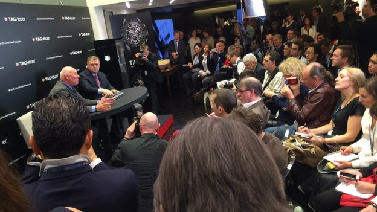
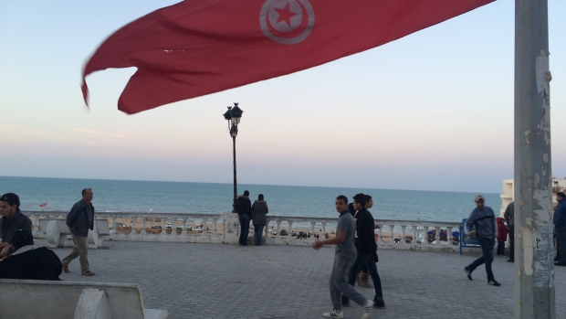

Mars One CEO responds to criticism of the spacefaring project
Candidates paying to win is "simply a lie."
By Sean O'Kane on March 19, 2015 04:05 pm
Tag Heuer teams up with Google and Intel for Android watch
By Leo Kelion Technology desk editor
Tunisia museum attack: Locals fear tourism backlash
21 victims, most of them tourists, were killed when gunmen stormed the museum
By Sylvia Thomson, CBC News Posted: Mar 19, 2015 6:34 PM ET
